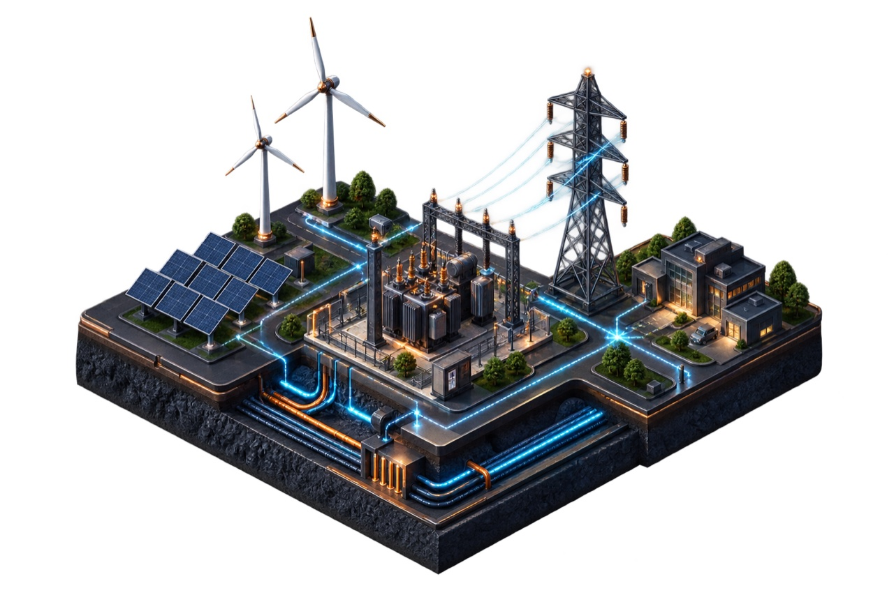
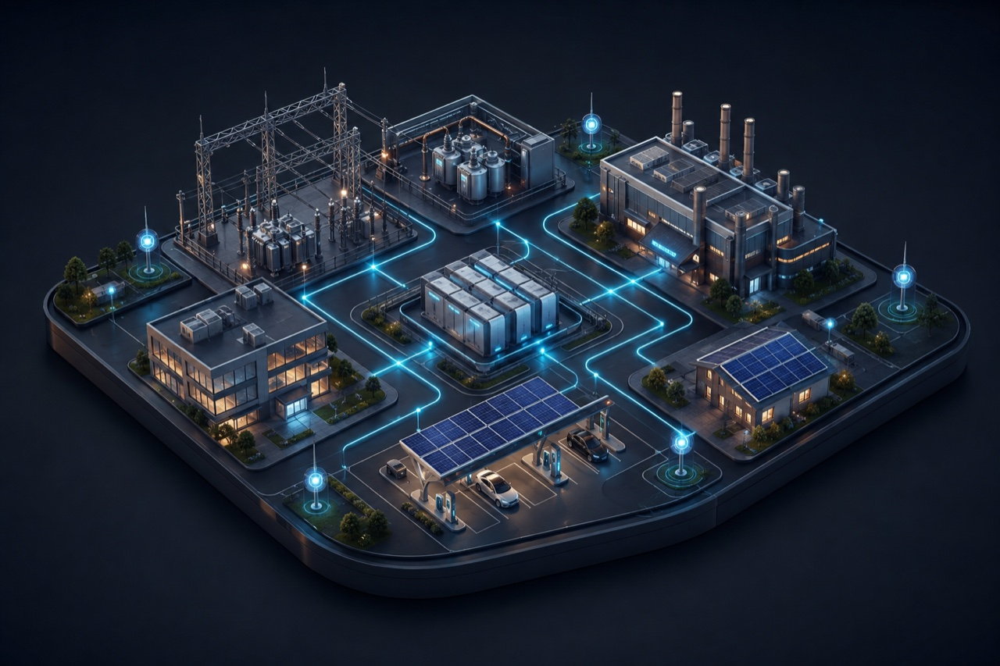
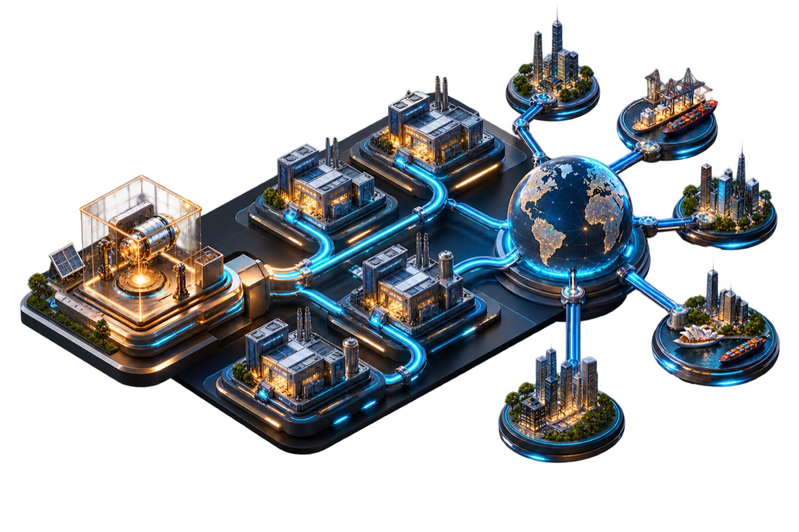

Electrification becomes the system.
Generation, networks, storage, industry, mobility, and buildings must operate as one connected value chain.
Electrification / intelligent infrastructure / global scale
I turn complex electricity and industrial technologies into offers, platforms, and operating models that move from pilot to global deployment.
Electricity is becoming the operating system of everything.
Clean generation, stronger networks, storage, mobility, buildings, and industry are converging into one increasingly dynamic electricity system.
The opportunity is larger than any single asset or technology. It is to connect engineering, intelligence, and commercial architecture across the full electrification value chain.
How I work ↘
Generation, networks, storage, industry, mobility, and buildings must operate as one connected value chain.

Sensing, software, and AI create a live understanding of how electricity is produced, moved, stored, and used.

The hard part is turning a successful pilot into a repeatable, multi-market deployment engine.
I work across the entire value chain—from the physics of the asset to the economics of the offer.
Strategies connecting clean generation, networks, storage, mobility, buildings, and industry.
Resilience, flexibility, asset performance, and the modernization of power-system operations.
Monitoring, anomaly detection, and predictive insight across critical electrical infrastructure.
Productization, delivery models, and governance that make deployment repeatable.
Architectures that connect fragmented energy assets, telemetry, and decisions into one system.
Commercial models for intelligent infrastructure, flexibility, services, and recurring value.
Anonymized examples spanning offer leadership, platform strategy, and industrial deployment.
Turned an early-stage monitoring pilot into a commercial intelligence platform built for multi-utility deployment.
Value architecture, pricing model, product positioning, and a repeatable market-entry playbook.
Pilot → global product line
Designed the connected-asset roadmap for a complex, multi-site industrial operator.
Align data, operations, technology, and capital governance around a single transformation path.
A CFO-defensible route to scale
Reframed a hardware offer as an ongoing sensing-and-insights relationship.
Market sizing, tiered pricing, unit economics, and the operating assumptions behind recurring revenue.
A scalable hardware × software model
Led the offer architecture for a major utility mandate spanning physical and digital infrastructure.
Unify engineering, product, supply chain, monitoring, and partners into one electrification proposition.
Awarded mandate
Ideas in motion

Engineer by training.
Operator by experience.
Systems thinker by default.
I’m Global Grid Offer Director at Nexans, where I lead offer strategy across the rapidly evolving world of electrification, intelligent infrastructure, Industry 4.0, and AI-driven sensing.
My work follows one question: how do you turn a real engineering breakthrough into something an industry can deploy at scale? I connect the energy system, the intelligence layer, the operating model, and the commercial logic required to make that happen.
I advise selectively where the challenge is genuinely about transformation and scale—not another presentation about it.
If you are working on a hard problem at the intersection of physical infrastructure and intelligence, send me the context.